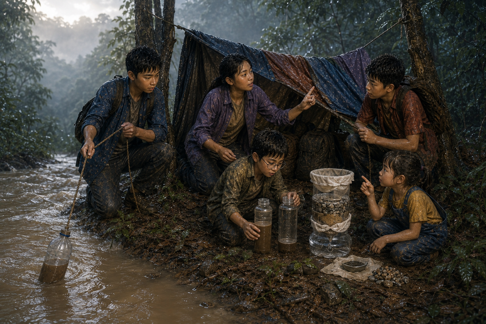

น้ำที่ดื่มไม่ได้
เวลาอ่านประมาณ 15 นาที · Survival / Science / Mystery
เสียงฝนหยุดไปก่อนรุ่งสาง แต่หยดน้ำยังตกจากปลายใบไม้ลงบนหลังคาเสื้อกันฝนเป็นจังหวะ
ฟ้าลืมตาขึ้นเพราะได้ยินเสียงท้องของตัวเองร้อง เธอควานหาขวดน้ำแล้วเขย่า น้ำเหลือเพียงก้นขวด
“ของหนูเหลือสองอึก”
ทุกคนตรวจของตัวเอง เมื่อนำมารวมกัน น้ำสะอาดทั้งหมดไม่ถึงหนึ่งขวดใหญ่
ต้นกล้ามองหยดน้ำบนใบไม้ “รอบตัวมีน้ำตั้งเยอะ”
มีนาส่ายหน้า “มีน้ำ ไม่ได้แปลว่าดื่มได้”
เสียงลำธารดังมาจากด้านล่าง แต่หลังฝนหนัก น้ำเป็นสีน้ำตาลและไหลเร็ว นนท์จึงผูกขวดเปล่ากับเชือก ให้ต้นกล้าหย่อนจากตลิ่งที่มั่นคงโดยไม่เข้าใกล้น้ำ
น้ำในขวดขุ่นจนมองไม่เห็นนิ้วที่อยู่อีกด้าน มีเศษใบไม้และเม็ดทรายลอยวนอยู่
ปั้นวางขวดนิ่ง ๆ ไม่นานเม็ดทรายหนักก็เริ่มตกลงด้านล่าง
“ถ้ารอให้มันใส เราดื่มได้ไหม” ฟ้าถาม
“ยัง” มีนาตอบ “สิ่งเล็กมากอย่างจุลินทรีย์มองไม่เห็นด้วยตา ต่อให้น้ำดูใสก็อาจทำให้ป่วยได้”
พวกเขาค้นกระเป๋าอุปกรณ์ พบผ้าสะอาด ขวดพลาสติกสำรอง และหม้ออะลูมิเนียมใบเล็กจากชุดปฐมพยาบาลภาคสนาม แต่ไม้ขีดในซองชื้นหมด

น้ำที่ใสขึ้นอาจยังไม่ปลอดภัย สิ่งที่มองไม่เห็นต่างหากคือปัญหา
นนท์ตัดก้นขวดอย่างระวัง วางผ้าสะอาดไว้ตรงปาก แล้วเรียงกรวดล้างสะอาด ทราย และผ้าอีกชั้น ปั้นเทน้ำทีละน้อยลงไป
น้ำที่ไหลออกมาใสขึ้นมาก ต้นกล้ายกขวดรับแสงอย่างภูมิใจ
“สำเร็จ!”
มีนาจับข้อมือเขาก่อนยกขวดขึ้นดื่ม “สำเร็จแค่เอาดินออก เชื้อโรคอาจยังอยู่”
พวกเขาต้องทำให้น้ำเดือด แต่ไม่มีไฟ นนท์นึกถึงแว่นขยายในชุดสำรวจ ขณะเดียวกันเมฆกำลังแยกและมีแสงแดดลอดลงมาเพียงช่วงสั้น ๆ
🧠 จุดให้คิดประจำตอน
ทีมมีน้ำที่กรองจนใสแล้ว แต่ยังไม่ได้ฆ่าเชื้อ ควรทำอย่างไร?
A. ดื่มทันที เพราะมองไม่เห็นสิ่งสกปรกแล้ว
B. รอให้น้ำเย็นเอง เชื้อโรคจะหายไป
C. เก็บน้ำไว้ก่อน แล้วหาวิธีทำให้เดือดหรือใช้วิธีฆ่าเชื้อที่เชื่อถือได้
ลองเลือกก่อนอ่านต่อ
ทุกคนเลือก C นนท์กับต้นกล้ารวบรวมเศษไม้แห้งจากใต้กิ่งที่ไม่โดนฝน มีนาหาเปลือกไม้แห้งชั้นใน ปั้นใช้แว่นขยายรวมแสงลงบนใยแห้ง ส่วนฟ้าบังลมด้วยกระเป๋า
ควันเส้นเล็กปรากฏขึ้น ก่อนจะกลายเป็นเปลวไฟจิ๋ว ต้นกล้าเกือบรีบใส่กิ่งใหญ่ แต่นนท์ห้ามไว้และค่อย ๆ เพิ่มเชื้อไฟทีละขนาด
เมื่อไอน้ำเริ่มลอย ทุกคนเฝ้าจนเดือดพล่าน แล้วพักให้น้ำเย็นในภาชนะที่ปิดสะอาด
ฟ้าจิบน้ำคำแรก “น้ำต้มไม่อร่อยเท่าน้ำเย็น”
“แต่อร่อยกว่าปวดท้อง” มีนาตอบ
ขณะเก็บของ ปั้นสังเกตตะกอนในขวดแรก มันไม่ได้กองราบ แต่เอียงเป็นแนวเหมือนถูกสั่นซ้ำ ๆ จากทิศเดียว
เขาวางฝาขวดที่มีน้ำตื้น ๆ ลงบนพื้น ผิวน้ำเกิดวงกระเพื่อมเล็ก ๆ ทุกสิบเอ็ดวินาที
ตึก... ตึก... ตึก...
ต้นกล้าหันไปทางภูเขา “เสียงเมื่อคืน?”
นนท์จับเวลา สามครั้งติดต่อกันห่างเท่ากันพอดี
แล้วฝาขวดก็ค่อย ๆ เลื่อนไปบนพื้นเอียง ชี้ไปยังป่าด้านเหนือ
ทิศเดียวกับแสงสีเขียวเมื่อคืน
🔬 วิทยาศาสตร์ในตอนนี้
การตกตะกอนและการกรองช่วยลดความขุ่น แต่ไม่ได้รับประกันว่าน้ำปลอดเชื้อ น้ำสำหรับดื่มต้องผ่านวิธีฆ่าเชื้อที่เชื่อถือได้ เช่น การต้มจนเดือด และเก็บในภาชนะสะอาด